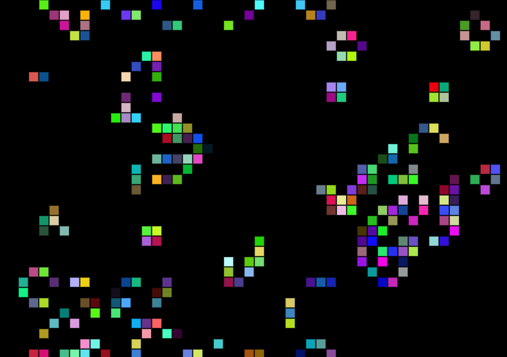

|  | An implimentation of Conway's Game of Life using javascript and p5.js. As well as the 4 standard "rules of life" this version also includes the highlife rule. Now including a headache inducing disco theme. |
|---|
| No scissors or papercuts required ;) The black sqaure simulates a square of paper which has been folded six times, and the mouse movements are scissors cutting the folded paper to create a snowflake design. |
|---|
| A simple bouncing circle which changes colour upon each collision, created as a demo for my HackSoc workshop (22/10/24). |
|---|
| A simple tool made using Python's turtle library. Each iteration systematically picks a point on the parametric equation and then the "turtle" draws a straight line from the centre to this point. |
|---|
This is me
I promise I'll put buttons here #soon